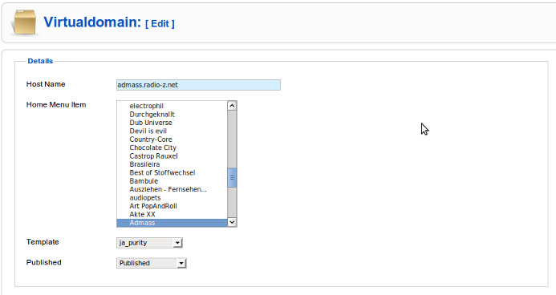
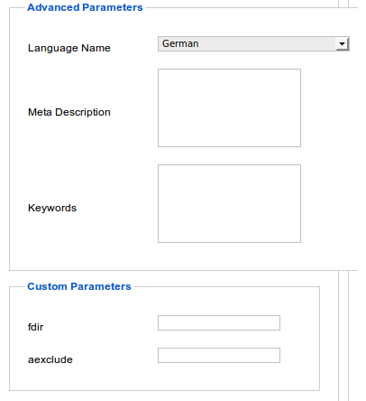
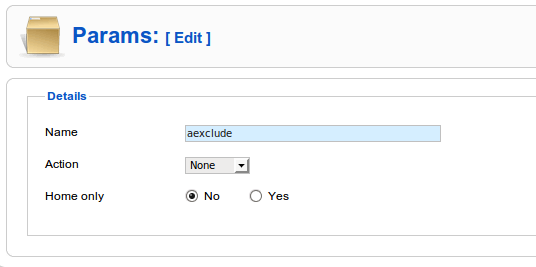

Virtual Domains Help
Content
Introduction
The idea of Virtual Domains, it is, to have two or more sites with different design and partially different content and functionality, but without the necessarity to manage consistent content multiple.
This can be achieved with Joomla in combination with Virtual Domains, by defining for each website/domain a special template and specifying what menu should be the starting point for the site.
Example
1. Domain main.domain.tld starts with the menu item "Home" and the template ja_purity is assigned. (Say Home is part of the menu "firstmenu").
2. Domain second.domain.tld starts with the menu item "News" and the template 'Beez' is assigned. (Say "News" menu item is the blog view of the category "News" and part of the menu "secondmenu") .
3. Both domains should show the menu "Company". (Let's say Company contains various links to learn more about our company).
Practice
- Add the required menu items.
- In the template ja_purity define in the file "templateDetails.xml" at the section "positions" a position "first", in the template 'Beez' define a position 'second' and in both templates a position 'company'. Make sure that the positions are called by the index.php of the templates and are located at the right place (eg: <jdoc:include type="modules" name="first" />)
- Under Extensions> Modules assign
- to the menu 'firstmenu' the position 'first'
- to the menu 'secondmenu' the position 'second'
- to the menu 'Company' the position 'company'
- In the plugin virtualdomains define main.domain.tld as the default domain.
- In the Virtual Domains Manager add the second.domain.tld as item, assign the the template 'Beez' and the menu item "News" as point of start.
Now each site has a different design, and a separate menu with different content but also a common menu with the same content.
View Virtual Domains
Description
- Define Virtual Domain, assign a menu item, that provides de dsired content for "Home" and assign a template too.
- Define language (Joomfish), meta description, keywords, and possibly your own parameters.
Caution:Don't add standard /main domain. For the default domain, Joomlas common settings for page template are valid. Standard domain must be recognized in the plugin "virtualdomains.php".
Screenshot1

Screenshot2

- Langugage: Used by Joomfish
- Meta-Description/Keywords: Print this in meta tags
- Custom Parameters: Are defined in the View "Parameters". May be used by programmers for domain specific adaptions.
View Parameters
Description
Custom Parameters may be used by programmers for domain specific adaptions.
Here you can define new parameter keys. The corresponding values for each domain, you can enter in the appropriate template. Keys and values are added to the variables $ _REQUEST or $ _GLOBALS.
Screenshot

- Name: Parameters keyword
- Action:
- None:Don't add to $_GLOBALS and $_REQUEST (eg, to instead use a database query)
- Request:Add to $_REQUEST
- Globals:Add to $_GLOBALS
- Home only: Use the parameter only for the home of the domain.